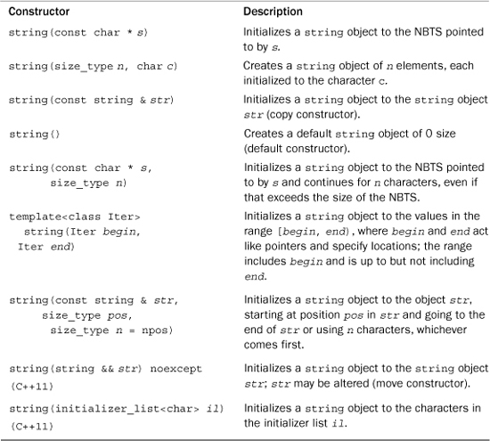
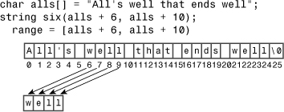
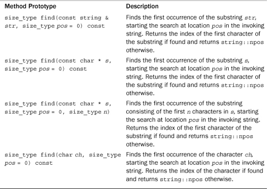
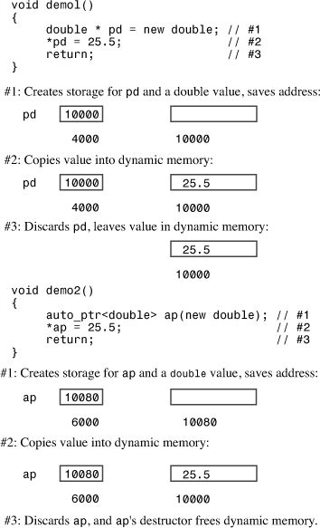
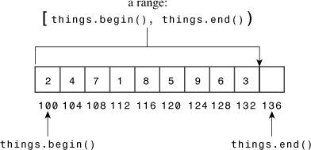

string Class and the Standard Template LibraryIn this chapter you’ll learn about the following:
• The standard C++ string class
• The auto_ptr, unique_ptr, and shared_ptr templates
• The Standard Template Library (STL)
• Container classes
• Iterators
• Function objects (functors)
• STL algorithms
• The initializer_list template
By now you are familiar with the C++ goal of reusable code. One of the big payoffs is when you can reuse code written by others. That’s where class libraries come in. There are many commercially available C++ class libraries, and there are also libraries that come as part of the C++ package. For example, you’ve been using the input/output classes supported by the ostream header file. This chapter looks at other reusable code available for your programming pleasure.
You’ve already encountered the string class, and this chapter examines it more extensively. Then the chapter looks at “smart pointer” template classes that make managing dynamic memory a bit easier. Next, the chapter looks at the Standard Template Library (STL), a collection of useful templates for handling various kinds of container objects. The STL exemplifies the programming paradigm called generic programming. Finally, the chapter looks at the initializer_list template class, the C++11 addition that enables using initializer-list syntax with STL objects.
string ClassMany programming applications need to process strings. C provides some support with its string.h (cstring in C++) family of string functions, and many early C++ implementations provide home-grown classes to handle strings. Chapter 4, “Compound Types,” introduced the ANSI/ISO C++ string class. Chapter 12, “Classes and Dynamic Memory Allocation,” with its modest String class, illustrates some aspects of designing a class to represent strings.
Recall that the string class is supported by the string header file. (Note that the string.h and cstring header files support the C library string functions for C-style strings, not the string class.) The key to using a class is knowing its public interface, and the string class has an extensive set of methods, including several constructors, overloaded operators for assigning strings, concatenating strings, comparing strings, and accessing individual elements, as well as utilities for finding characters and substrings in a string, and more. In short, the string class has lots to offer.
Let’s look at the string constructors. After all, one of the most important things to know about a class is what your options are when creating objects of that class. Listing 16.1 uses seven of the string constructors (labeled ctor, the traditional C++ abbreviation for constructor). Table 16.1 briefly describes the constructors. The table begins with the seven constructors used in Listing 16.1, in that order. It also lists a couple of C++11 additions. The constructor representations are simplified in that they conceal the fact that string really is a typedef for a template specialization basic_string<char> and that they omit an optional argument relating to memory management. (This aspect is discussed later this chapter and in Appendix F, “The string Template Class.”) The type size_type is an implementation-dependent integral type defined in the string header file. The class defines string::npos as the maximum possible length of the string. Typically, this would equal the maximum value of an unsigned int. Also the table uses the common abbreviation NBTS for null-byte-terminated string—that is, the traditional C string, which is terminated with a null character.
Table 16.1. string Class Constructors

// str1.cpp -- introducing the string class
#include <iostream>
#include <string>
// using string constructors
int main()
{
using namespace std;
string one("Lottery Winner!"); // ctor #1
cout << one << endl; // overloaded <<
string two(20, '$'); // ctor #2
cout << two << endl;
string three(one); // ctor #3
cout << three << endl;
one += " Oops!"; // overloaded +=
cout << one << endl;
two = "Sorry! That was ";
three[0] = 'P';
string four; // ctor #4
four = two + three; // overloaded +, =
cout << four << endl;
char alls[] = "All's well that ends well";
string five(alls,20); // ctor #5
cout << five << "!\n";
string six(alls+6, alls + 10); // ctor #6
cout << six << ", ";
string seven(&five[6], &five[10]); // ctor #6 again
cout << seven << "...\n";
string eight(four, 7, 16); // ctor #7
cout << eight << " in motion!" << endl;
return 0;
}
The program in Listing 16.1 also uses the overloaded += operator, which appends one string to another, the overloaded = operator for assigning one string to another, the overloaded << operator for displaying a string object, and the overloaded [] operator for accessing an individual character in a string.
Here is the output of the program in Listing 16.1:
Lottery Winner!
$$$$$$$$$$$$$$$$$$$$
Lottery Winner!
Lottery Winner! Oops!
Sorry! That was Pottery Winner!
All's well that ends!
well, well...
That was Pottery in motion!
The start of the program in Listing 16.1 illustrates that you can initialize a string object to a regular C-style string and display it by using the overloaded << operator:
string one("Lottery Winner!"); // ctor #1
cout << one << endl; // overloaded <<
The next constructor initializes the string object two to a string consisting of 20 $ characters:
string two(20, '$'); // ctor #2
The copy constructor initializes the string object three to the string object one:
string three(one); // ctor #3
The overloaded += operator appends the string " Oops!" to the string one:
one += " Oops!"; // overloaded +=
This particular example appends a C-style string to a string object. However, the += operator is multiply overloaded so that you can also append string objects and single characters:
one += two; // append a string object (not in program)
one += '!'; // append a type char value (not in program)
Similarly, the = operator is overloaded so that you can assign a string object to a string object, a C-style string to a string object, or a simple char value to a string object:
two = "Sorry! That was "; // assign a C-style string
two = one; // assign a string object (not in program)
two = '?'; // assign a char value (not in program)
Overloading the [] operator, as the String example in Chapter 12 does, permits access to individual characters in a string object by using array notation:
three[0] = 'P';
A default constructor creates an empty string that can later be given a value:
string four; // ctor #4
four = two + three; // overloaded +, =
The second line here uses the overloaded + operator to create a temporary string object, which is then assigned, using the overloaded = operator, to the four object. As you might expect, the + operator concatenates its two operands into a single string object. The operator is multiply overloaded, so the second operand can be a string object or a C-style string or a char value.
The fifth constructor takes a C-style string and an integer as arguments, with the integer indicating how many characters to copy:
char alls[] = "All's well that ends well";
string five(alls,20); // ctor #5
Here, as the output shows, just the first 20 characters ("All's well that ends") are used to initialize the five object. As Table 16.1 notes, if the character count exceeds the length of the C-style string, the requested number of characters is still copied. So replacing 20 with 40 in the preceding example would result in 15 junk characters being copied at the end of five. (That is, the constructor would interpret the contents in memory following the string "All's well that ends well" as character codes.)
The sixth constructor has a template argument:
template<class Iter> string(Iter begin, Iter end);
The intent is that begin and end act like pointers pointing to two locations in memory. (In general, begin and end can be iterators, generalizations of pointers extensively used in the STL.) The constructor then uses the values between the locations pointed to by begin and end to initialize the string object it constructs. The notation [begin, end), borrowed from mathematics, means the range includes begin but doesn’t include end. That is, end points to a location one past the last value to be used. Consider the following statement:
string six(alls+6, alls + 10); // ctor #6
Because the name of an array is a pointer, both alls + 6 and alls + 10 are type char *, so the template is used with Iter replaced by type char *. The first argument points to the first w in the alls array, and the second argument points to the space following the first well. Thus, six is initialized to the string "well". Figure 16.1 shows how the constructor works.
Figure 16.1. A string constructor using a range.

Now suppose you want to use this constructor to initialize an object to part of another string object—say, the object five. The following does not work:
string seven(five + 6, five + 10);
The reason is that the name of an object, unlike the name of an array, is not treated as the address of an object, hence five is not a pointer and five + 6 is meaningless. However, five[6] is a char value, so &five[6] is an address and can be used as an argument to the constructor:
string seven(&five[6], &five[10]);// ctor #6 again
The seventh constructor copies a portion of one string object to the constructed object:
string eight(four, 7, 16); // ctor #7
This statement copies 16 characters from four to eight, starting at position 7 (the eighth character) in four.
The string(string && str) noexcept constructor is similar to the copy constructor in that the new string is a copy of str. However, unlike the copy constructor, it doesn’t guarantee that str will be treated as const. This form of constructor is termed a move constructor. The compiler can use it in some situations instead of the copy constructor to optimize performance. Chapter 18, “Visiting with the New C++ Standard,” discusses this topic in the section “Move Semantics and the rvalue Reference.”
The string(initializer_list<char> il) constructor enables list-initialization for the string class. That is, it makes declarations like the following possible:
string piano_man = {'L', 'i', 's','z','t'};
string comp_lang {'L', 'i', 's', 'p'};
This may not be that useful for the string class because using C-style strings is easier, but it does satisfy the intent to make the list-initialization syntax universal. This chapter will discuss the initializer_list template further later on.
string Class InputAnother useful thing to know about a class is what input options are available. For C-style strings, recall, you have three options:
char info[100];
cin >> info; // read a word
cin.getline(info, 100); // read a line, discard \n
cin.get(info, 100); // read a line, leave \n in queue
For string objects, recall, you have two options:
string stuff;
cin >> stuff; // read a word
getline(cin, stuff); // read a line, discard \n
Both versions of getline() allow for an optional argument that specifies which character to use to delimit input:
cin.getline(info,100,':'); // read up to :, discard :
getline(stuff, ':'); // read up to :, discard :
The main operational difference is that the string versions automatically size the target string object to hold the input characters:
char fname[10];
string lname;
cin >> fname; // could be a problem if input size > 9 characters
cin >> lname; // can read a very, very long word
cin.getline(fname, 10); // may truncate input
getline(cin, fname); // no truncation
The automatic sizing feature allows the string version of getline() to dispense with the numeric parameter that limits the number of input characters to be read.
A design difference is that the C-style string input facilities are methods of the istream class, whereas the string versions are standalone functions. That’s why cin is an invoking object for C-style string input and a function argument for string object input. This applies to the >> form, too, which is evident if the code is written in function form:
cin.operator>>(fname); // ostream class method
operator>>(cin, lname); // regular function
Let’s examine the string input functions a bit more closely. Both, as mentioned, size the target string to fit the input. There are limits. The first limiting factor is the maximum allowable size for a string, represented by the constant string::npos. This, typically, is the maximum value of an unsigned int, so it doesn’t pose a practical limit for ordinary, interactive input. It could be a factor, however, if you attempt to read the contents of an entire file into a single string object. The second limiting factor is the amount of memory available to a program.
The getline() function for the string class reads characters from the input and stores them in a string object until one of three things occurs:
• The end-of-file is encountered, in which case eofbit of the input stream is set, implying that both the fail() and eof() methods will return true.
• The delimiting character (\n, by default) is reached, in which case it is removed from the input stream but not stored.
• The maximum possible number of characters (the lesser of string::npos and the number of bytes in memory available for allocation) is read, in which case failbit of the input stream is set, implying that the fail() method will return true.
(An input stream object has an accounting system to keep track of the error state of the stream. In this system, setting eofbit registers detecting the end-of-file; setting failbit registers detecting an input error; setting badbit registers some unrecognized failure, such as a hardware failure; and setting goodbit indicates that all is well. Chapter 17, “Input, Output, and Files,” discusses this further.)
The operator>>() function for the string class behaves similarly, except that instead of reading to and discarding a delimiting character, it reads up to a white space character and leaves that character in the input queue. A white space character is a space, newline, or tab character or more generally, any character for which isspace() returns true.
So far in this book, you’ve seen several examples of console string input. Because the input functions for string objects work with streams and recognize the end-of-file, you can also use them for file input. Listing 16.2 shows a short example that reads strings from the file. It assumes that the file contains strings separated by the colon character and uses the getline() method of specifying a delimiter. It then numbers and displays the strings, one string to an output line.
// strfile.cpp -- read strings from a file
#include <iostream>
#include <fstream>
#include <string>
#include <cstdlib>
int main()
{
using namespace std;
ifstream fin;
fin.open("tobuy.txt");
if (fin.is_open() == false)
{
cerr << "Can't open file. Bye.\n";
exit(EXIT_FAILURE);
}
string item;
int count = 0;
getline(fin, item, ':');
while (fin) // while input is good
{
++count;
cout << count <<": " << item << endl;
getline(fin, item,':');
}
cout << "Done\n";
fin.close();
return 0;
}
Here is a sample tobuy.txt file:
sardines:chocolate ice cream:pop corn:leeks:
cottage cheese:olive oil:butter:tofu:
Typically, for the program to find the text file, the text file should be in the same directory as the executable program or sometimes in the same directory as the project file. Or you can provide the full path name. On a Windows system, keep in mind that in a C-style string the escape sequence \\ represents a single backslash:
fin.open("C:\\CPP\\Progs\\tobuy.txt"); // file = C:\CPP\Progs\tobuy.txt
Here is the output of the program in Listing 16.2:
1: sardines
2: chocolate ice cream
3: pop corn
4: leeks
5:
cottage cheese
6: olive oil
7: butter
8: tofu
9:
Done
Note that with : specified as the delimiting character, the newline character becomes just another regular character. Thus, the newline character at the end of the first line of the file becomes the first character of the string that continues as "cottage cheese". Similarly, the newline character at the end of the second input line, if present, becomes the sole content of the ninth input string.
So far, you’ve learned that you can create string objects in a variety of ways, display the contents of a string object, read data into a string object, append to a string object, assign to a string object, and concatenate two string objects. What else can you do?
You can compare strings. All six relational operators are overloaded for string objects, with one object being considered less than another if it occurs earlier in the machine collating sequence. If the machine collating sequence is the ASCII code, that implies that digits are less than uppercase characters and uppercase characters are less than lowercase characters. Each relational operator is overloaded three ways so that you can compare a string object with another string object, compare a string object with a C-style string, and compare a C-style string with a string object:
string snake1("cobra");
string snake2("coral");
char snake3[20] = "anaconda";
if (snake1 < snake 2) // operator<(const string &, const string &)
...
if (snake1 == snake3) // operator==(const string &, const char *)
...
if (snake3 != snake2) // operator!=(const char *, const string &)
...
You can determine the size of a string. Both the size() and length() member functions return the number of characters in a string:
if (snake1.length() == snake2.size())
cout << "Both strings have the same length.\n"
Why two functions that do the same thing? The length() member comes from earlier versions of the string class, and size() was added for STL compatibility.
You can search a string for a given substring or character in a variety of ways. Table 16.2 provides a short description of four variations of a find() method. Recall that string::npos is the maximum possible number of characters in a string, typically the largest unsigned int or unsigned long value.
Table 16.2. The Overloaded find() Method

The string library also provides the related methods rfind(), find_first_of(), find_last_of(), find_first_not_of(), and find_last_not_of(), each with the same set of overloaded function signatures as the find() method. The rfind() method finds the last occurrence of a substring or character. The find_first_of() method finds the first occurrence in the invoking string of any of the characters in the argument. For example, the following statement would return the location of the r in "cobra" (that is, the index 3) because that’s the first occurrence of any of the letters in "hark" in "cobra":
int where = snake1.find_first_of("hark");
The find_last_of() method works the same, except it finds the last occurrence. Thus, the following statement would return the location of the a in "cobra":
int where = snake1.last_first_of("hark");
The find_first_not_of() method finds the first character in the invoking string that is not a character in the argument. So the following would return the location of the c in cobra because c is not found in hark:
int where = snake1.find_first_not_of("hark");
(You’ll learn about find_last_not_of() in an exercise at the end of this chapter.)
There are many more methods, but these are enough to put together a sample program that’s a graphically impaired version of the word game Hangman. The game stores a list of words in an array of string objects, picks a word at random, and lets you guess letters in the word. Six wrong guesses, and you lose. The program uses the find() function to check your guesses and the += operator to build a string object to keep track of your wrong guesses. To keep track of your good guesses, the program creates a word the same length as the mystery word but consisting of hyphens. The hyphens are then replaced by correct guesses. Listing 16.3 shows the program.
// hangman.cpp -- some string methods
#include <iostream>
#include <string>
#include <cstdlib>
#include <ctime>
#include <cctype>
using std::string;
const int NUM = 26;
const string wordlist[NUM] = {"apiary", "beetle", "cereal",
"danger", "ensign", "florid", "garage", "health", "insult",
"jackal", "keeper", "loaner", "manage", "nonce", "onset",
"plaid", "quilt", "remote", "stolid", "train", "useful",
"valid", "whence", "xenon", "yearn", "zippy"};
int main()
{
using std::cout;
using std::cin;
using std::tolower;
using std::endl;
std::srand(std::time(0));
char play;
cout << "Will you play a word game? <y/n> ";
cin >> play;
play = tolower(play);
while (play == 'y')
{
string target = wordlist[std::rand() % NUM];
int length = target.length();
string attempt(length, '-');
string badchars;
int guesses = 6;
cout << "Guess my secret word. It has " << length
<< " letters, and you guess\n"
<< "one letter at a time. You get " << guesses
<< " wrong guesses.\n";
cout << "Your word: " << attempt << endl;
while (guesses > 0 && attempt != target)
{
char letter;
cout << "Guess a letter: ";
cin >> letter;
if (badchars.find(letter) != string::npos
|| attempt.find(letter) != string::npos)
{
cout << "You already guessed that. Try again.\n";
continue;
}
int loc = target.find(letter);
if (loc == string::npos)
{
cout << "Oh, bad guess!\n";
--guesses;
badchars += letter; // add to string
}
else
{
cout << "Good guess!\n";
attempt[loc]=letter;
// check if letter appears again
loc = target.find(letter, loc + 1);
while (loc != string::npos)
{
attempt[loc]=letter;
loc = target.find(letter, loc + 1);
}
}
cout << "Your word: " << attempt << endl;
if (attempt != target)
{
if (badchars.length() > 0)
cout << "Bad choices: " << badchars << endl;
cout << guesses << " bad guesses left\n";
}
}
if (guesses > 0)
cout << "That's right!\n";
else
cout << "Sorry, the word is " << target << ".\n";
cout << "Will you play another? <y/n> ";
cin >> play;
play = tolower(play);
}
cout << "Bye\n";
return 0;
}
Here’s a sample run of the program in Listing 16.3:
Will you play a word game? <y/n> y
Guess my secret word. It has 6 letters, and you guess
one letter at a time. You get 6 wrong guesses.
Your word: ------
Guess a letter: e
Oh, bad guess!
Your word: ------
Bad choices: e
5 bad guesses left
Guess a letter: a
Good guess!
Your word: a--a--
Bad choices: e
5 bad guesses left
Guess a letter: t
Oh, bad guess!
Your word: a--a--
Bad choices: et
4 bad guesses left
Guess a letter: r
Good guess!
Your word: a--ar-
Bad choices: et
4 bad guesses left
Guess a letter: y
Good guess!
Your word: a--ary
Bad choices: et
4 bad guesses left
Guess a letter: i
Good guess!
Your word: a-iary
Bad choices: et
4 bad guesses left
Guess a letter: p
Good guess!
Your word: apiary
That's right!
Will you play another? <y/n> n
Bye
In Listing 16.3, the fact that the relational operators are overloaded lets you treat strings in the same fashion you would treat numeric variables:
while (guesses > 0 && attempt != target)
This is easier to follow than, say, using strcmp() with C-style strings.
The program uses find() to check whether a character was selected earlier; if it was already selected, it will be found in either the badchars string (bad guesses) or in the attempt string (good guesses):
if (badchars.find(letter) != string::npos
|| attempt.find(letter) != string::npos)
The npos variable is a static member of the string class. Its value, recall, is the maximum allowable number of characters for a string object. Therefore, because indexing begins at zero, it is one greater than the largest possible index and can be used to indicate failure to find a character or a string.
The program makes use of the fact that one of the overloaded versions of the += operator lets you append individual characters to a string:
badchars += letter; // append a char to a string object
The heart of the program begins by checking whether the chosen letter is in the mystery word:
int loc = target.find(letter);
If loc is a valid value, the letter can be placed in the corresponding location in the answer string:
attempt[loc]=letter;
However, a given letter might occur more than once in the mystery word, so the program has to keep checking. The program uses the optional second argument to find(), which specifies a starting place in the string from which to begin the search. Because the letter was found at location loc, the next search should begin at loc + 1. A while loop keeps the search going until no more occurrences of that character are found. Note that find() indicates failure if loc is after the end of the string:
// check if letter appears again
loc = target.find(letter, loc + 1);
while (loc != string::npos)
{
attempt[loc]=letter;
loc = target.find(letter, loc + 1);
}
string Class Offer?The string library supplies many other facilities. There are functions for erasing part or all of a string, for replacing part or all of one string with part or all of another string, for inserting material into a string or removing material from a string, for comparing part or all of one string with part or all of another string, and for extracting a substring from a string. There’s a function for copying part of one string to another string, and there’s a function for swapping the contents of two strings. Most of these functions are overloaded so that they can work with C-style strings as well as with string objects. Appendix F describes the string library function briefly, but let’s talk about a few more features here.
First, think about the automatic sizing feature. In Listing 16.3, what happens each time the program appends a letter to a string? It can’t necessarily just grow the string in place because it might run into neighboring memory that is already in use. So it may have to allocate a new block and then copy the old contents to a new location. It would be inefficient to do this a lot, so many C++ implementations allocate a block of memory larger than the actual string, giving the string room to grow. Then if the string eventually exceeds that size, the program allocates a new block twice the size to afford more room to grow without continuous resizing. The capacity() method returns the size of the current block, and the reserve() method allows you to request a minimum size for the block. Listing 16.4 shows an example that uses these methods.
// str2.cpp -- capacity() and reserve()
#include <iostream>
#include <string>
int main()
{
using namespace std;
string empty;
string small = "bit";
string larger = "Elephants are a girl's best friend";
cout << "Sizes:\n";
cout << "\tempty: " << empty.size() << endl;
cout << "\tsmall: " << small.size() << endl;
cout << "\tlarger: " << larger.size() << endl;
cout << "Capacities:\n";
cout << "\tempty: " << empty.capacity() << endl;
cout << "\tsmall: " << small.capacity() << endl;
cout << "\tlarger: " << larger.capacity() << endl;
empty.reserve(50);
cout << "Capacity after empty.reserve(50): "
<< empty.capacity() << endl;
return 0;
}
Here is the output of the program in Listing 16.4 for one C++ implementation:
Sizes:
empty: 0
small: 3
larger: 34
Capacities:
empty: 15
small: 15
larger: 47
Capacity after empty.reserve(50): 63
Note that this implementation uses a minimum capacity of 15 characters and seems to use 1 less than multiples of 16 as standard choices for capacities. Other implementations may make different choices.
What if you have a string object but need a C-style string? For example, you might want to open a file whose name is in a string object:
string filename;
cout << "Enter file name: ";
cin >> filename;
ofstream fout;
The bad news is that the open() method requires a C-style string argument. The good news is that the c_str() method returns a pointer to a C-style string that has the same contents as the invoking string object. So you can use this:
fout.open(filename.c_str());
This section treats the string class as if it were based on the char type. In fact, as mentioned earlier, the string library really is based on a template class:
template<class charT, class traits = char _traits<charT>,
class Allocator = allocator<charT> >
basic_string {...};
The basic_string template comes with four specializations, each of which has a typedef name:
typedef basic_string<char> string;
typedef basic_string<wchar_t> wstring;
typedef basic_string<char16_t> u16string; // C++11
typedef basic_string<char32_t> u32string ; // C++11
This allows you to use strings based on the wchar_t, char16_t, and char32_t types as well as the char type. You could even develop some sort of character-like class and use the basic_string class template with it, provided that your class met certain requirements. The traits class describes specific facts about the chosen character type, such as how to compare values. There are predefined specializations of the char_traits template for the char, wchar_t, char16_t, and char32_t types, and these are the default values for traits. The Allocator class represents a class to manage memory allocation. There are predefined specializations of the allocator template for the various character types, and these are the defaults. They use new and delete.
A smart pointer is a class object that acts like a pointer but has additional features. Here we’ll look at three smart pointer templates that can help with managing the use of dynamic memory allocation. Let’s begin by taking a look at what might be needed and how it can be accomplished. Consider the following function:
void remodel(std::string & str)
{
std::string * ps = new std::string(str);
...
str = ps;
return;
}
You probably see its flaw. Each time the function is called, it allocates memory from the heap but never frees the memory, thus creating a memory leak. You also know the solution—just remember to free the allocated memory by adding the following statement just before the return statement:
delete ps;
However, a solution involving the phrase “just remember to” is seldom the best solution. Sometimes you won’t remember. Or you will remember but accidentally remove or comment out the code. And even if you do remember, there can still be problems. Consider the following variation:
void remodel(std::string & str)
{
std::string * ps = new std::string(str);
...
if (weird_thing())
throw exception();
str = *ps;
delete ps;
return;
}
If the exception is thrown, the delete statement isn’t reached, and again there is a memory leak.
You can fix that oversight, as illustrated in Chapter 14, “Reusing Code in C++,” but it would be nice if there were a neater solution. Let’s think about what is needed. When a function such as remodel() terminates, either normally or by throwing an exception, local variables are removed from the stack memory—so the memory occupied by the pointer ps is freed. It would be nice if, in addition, the memory pointed to by ps was freed. If ps had a destructor, that destructor could free the pointed-to memory when ps expires. Thus, the problem with ps is that it is just an ordinary pointer and not a class object having a destructor. If it were an object, you could have its destructor delete the pointed-to memory when the object expires. And that is the idea behind auto_ptr, unique_ptr, and shared_ptr. The auto_ptr template is the C++98 solution. C++11 deprecates auto_ptr and provides the other two as alternatives. However, although deprecated, auto_ptr has been used for years and may be your only choice if your compiler doesn’t support the other two.
These three smart pointer templates (auto_ptr, unique_ptr, and shared_ptr ) each defines a pointer-like object intended to be assigned an address obtained (directly or indirectly) by new. When the smart pointer expires, its destructor uses delete to free the memory. Thus, if you assign an address returned by new to one of these objects, you don’t have to remember to free the memory later; it will be freed automatically when the smart pointer object expires. Figure 16.2 illustrates the behavioral difference between auto_ptr and a regular pointer. The shared_ptr and unique_ptr share the same behavior in this situation.
Figure 16.2. A regular pointer versus auto_ptr.

To create one of these smart pointer objects, you include the memory header file, which includes the template definitions. Then you use the usual template syntax to instantiate the kind of pointer you require. The auto_ptr template, for instance, includes the following constructor:
template<class X> class auto_ptr {
public:
explicit auto_ptr(X* p =0) throw();
...};
(The throw() notation, recall, means this constructor doesn’t throw an exception. Like auto_ptr, it is deprecated.) Thus, asking for an auto_ptr object of type X gives you an auto_ptr object that points to type X:
auto_ptr<double> pd(new double); // pd an auto_ptr to double
// (use in place of double * pd)
auto_ptr<string> ps(new string); // ps an auto_ptr to string
// (use in place of string * ps)
Here new double is a pointer returned by new to a newly allocated chunk of memory. It is the argument to the auto_ptr<double> constructor; that is, it is the actual argument corresponding to the formal parameter p in the prototype. Similarly, new string is also an actual argument for a constructor. The other two smart pointers use the same syntax:
unique_ptr<double> pdu(new double); // pdu an unique_ptr to double
shared_ptr<string> pss(new string); // pss a shared_ptr to string
Thus, to convert the remodel() function, you would follow these three steps:
1. Include the memory header file.
2. Replace the pointer-to-string with a smart pointer object that points to string.
3. Remove the delete statement.
Here’s the function with those changes made using auto_ptr:
#include <memory>
void remodel(std::string & str)
{
std::auto_ptr<std::string> ps (new std::string(str));
...
if (weird_thing())
throw exception();
str = *ps;
// delete ps; NO LONGER NEEDED
return;
}
Note that smart pointers belong to the std namespace. Listing 16.5 presents a simple program using all three of these smart pointers. (Your compiler will need to support the C++11 shared_ptr and unique_ptr classes.) Each use is placed inside a block so that the pointer expires when execution leaves the block. The Report class uses verbose methods to report when an object is created or destroyed.
// smrtptrs.cpp -- using three kinds of smart pointers
// requires support of C++11 shared_ptr and unique_ptr
#include <iostream>
#include <string>
#include <memory>
class Report
{
private:
std::string str;
public:
Report(const std::string s) : str(s)
{ std::cout << "Object created!\n"; }
~Report() { std::cout << "Object deleted!\n"; }
void comment() const { std::cout << str << "\n"; }
};
int main()
{
{
std::auto_ptr<Report> ps (new Report("using auto_ptr"));
ps->comment(); // use -> to invoke a member function
}
{
std::shared_ptr<Report> ps (new Report("using shared_ptr"));
ps->comment();
}
{
std::unique_ptr<Report> ps (new Report("using unique_ptr"));
ps->comment();
}
return 0;
}
Object created!
using auto_ptr
Object deleted!
Object created!
using shared_ptr
Object deleted!
Object created!
using unique_ptr
Object deleted!
Each of these classes has an explicit constructor taking a pointer as an argument. Thus, there is no automatic type cast from a pointer to a smart pointer object:
shared_ptr<double> pd;
double *p_reg = new double;
pd = p_reg; // not allowed (implicit conversion)
pd = shared_ptr<double>(p_reg); // allowed (explicit conversion
shared_ptr<double> pshared = p_reg; // not allowed (implicit conversion)
shared_ptr<double> pshared(p_reg); // allowed (explicit conversion)
The smart pointer template classes are defined so that in most respects a smart pointer object acts like a regular pointer. For example, given that ps is a smart pointer object, you can dereference it (*ps), use it to access structure members (ps->puffIndex), and assign it to a regular pointer that points to the same type. You can also assign one smart pointer object to another of the same type, but that raises an issue that the next section faces.
But first, here’s something you should avoid with all three of these smart pointers:
string vacation("I wandered lonely as a cloud.");
shared_ptr<string> pvac(&vacation); // NO!
When pvac expires, the program would apply the delete operator to non-heap memory, which is wrong.
If Listing 16.5 represents the pinnacle of your programming aspirations, any of these three smart pointers will serve your purposes. But there is more to the story.
Why three smart pointers? (Actually, there are four, but we won’t discuss weak_ptr.) And why is auto_ptr being deprecated?
Begin by considering assignment:
auto_ptr<string> ps (new string("I reigned lonely as a cloud."));
auto_ptr<string> vocation;
vocation = ps;
What should the assignment statement accomplish? If ps and vocation were ordinary pointers, the result would be two pointers pointing to the same string object. That is not acceptable here because the program would wind up attempting to delete the same object twice—once when ps expires, and once when vocation expires. There are ways to avoid this problem:
• Define the assignment operator so that it makes a deep copy. This results in two pointers pointing to two distinct objects, one of which is a copy of the other.
• Institute the concept of ownership, with only one smart pointer allowed to own a particular object. Only if the smart pointer owns the object will its destructor delete the object. Then have assignment transfer ownership. This is the strategy used for auto_ptr and for unique_ptr, although unique_ptr is somewhat more restrictive.
• Create an even smarter pointer that keeps track of how many smart pointers refer to a particular object. This is called reference counting. Assignment, for example, would increase the count by one, and the expiration of a pointer would decrease the count by one. Only when the final pointer expires would delete be invoked. This is the shared_ptr strategy.
The same strategies we’ve discussed for assignment, of course, would also apply to the copy constructors.
Each approach has its uses. Listing 16.6 shows an example for which auto_ptr is poorly suited.
// fowl.cpp -- auto_ptr a poor choice
#include <iostream>
#include <string>
#include <memory>
int main()
{
using namespace std;
auto_ptr<string> films[5] =
{
auto_ptr<string> (new string("Fowl Balls")),
auto_ptr<string> (new string("Duck Walks")),
auto_ptr<string> (new string("Chicken Runs")),
auto_ptr<string> (new string("Turkey Errors")),
auto_ptr<string> (new string("Goose Eggs"))
};
auto_ptr<string> pwin;
pwin = films[2]; // films[2] loses ownership
cout << "The nominees for best avian baseball film are\n";
for (int i = 0; i < 5; i++)
cout << *films[i] << endl;
cout << "The winner is " << *pwin << "!\n";
cin.get();
return 0;
}
The nominees for best avian baseball film are
Fowl Balls
Duck Walks
Segmentation fault (core dumped)
The “core dumped” message should help fix in your memory that a misused auto_ptr can be a problem. (The behavior for this sort of code is undefined, so you might encounter different behavior, depending on your system.) Here the problem is that the following statement transfers ownership from films[2] to pwin:
pwin = films[2]; // films[2] loses ownership
That causes films[2] to no longer refer to the string. After an auto_ptr gives up ownership of an object, it no longer provides access to the object. When the program goes to print the string pointed to by films[2], it finds the null pointer, which apparently is an unpleasant surprise.
Suppose you go back to Listing 16.6 but use shared_ptr instead of auto_ptr. (You’ll need a compiler that supports the C++11 shared_ptr class.) Then the program runs fine and gives this output:
The nominees for best avian baseball film are
Fowl Balls
Duck Walks
Chicken Runs
Turkey Errors
Goose Eggs
The winner is Chicken Runs!
The difference occurs in this part of the program:
shared_ptr<string> pwin;
pwin = films[2];
This time both pwin and films[2] point to the same object, and the reference count is upped from 1 to 2. At the end of the program, pwin, which was declared last, is the first object to have its destructor called. The destructor decreases the reference count to 1. Then the members of the array of shared_ptrs are freed. The destructor for films[2] decrements the count to 0 and frees the previously allocated space.
So with shared_ptr, Listing 16.6 runs fine. With auto_ptr it experienced a runtime crash. What happens if you use unique_ptr? Like auto-ptr, unique_ptr incorporates the ownership model. Yet instead of crashing, the unique_ptr version yields a compile-time error objecting to this line:
pwin = films[2];
Clearly, it is time to look further into the differences between these last two types.
unique_ptr Is Better than auto_ptrConsider the following statements:
auto_ptr<string> p1(new string("auto"); //#1
auto_ptr<string> p2; //#2
p2 = p1; //#3
When, in statement #3, p2 takes over ownership of the string object, p1 is stripped of ownership. This, recall, is good because it prevents the destructors for both p1 and p2 from trying to delete the same object. But it also is bad if the program subsequently tries to use p1 because p1 no longer points to valid data.
Now consider the unique_ptr equivalent:
unique_ptr<string> p3(new string("auto"); //#4
unique_ptr<string> p4; //#5
p4 = p3; //#6
In this case, the compiler does not allow statement #6, so we avoid the problem of p3 not pointing to valid data. Hence, unique_ptr is safer (compile-time error versus potential program crash) than auto_ptr.
But there are times when assigning one smart pointer to another doesn’t leave a dangerous orphan behind. Suppose we have this function definition:
unique_ptr<string> demo(const char * s)
{
unique_ptr<string> temp(new string(s));
return temp;
}
And suppose we then have this code:
unique_ptr<string> ps;
ps = demo("Uniquely special");
Here, demo() returns a temporary unique_ptr, and then ps takes over ownership of the object originally owned by the returned unique_ptr. Then the returned unique_ptr is destroyed. That’s okay because ps now has ownership of the string object. But another good thing has happened. Because the temporary unique_ptr returned by demo() is soon destroyed, there’s no possibility of it being misused in an attempt to access invalid data. In other words, there is no reason to forbid assignment in this case. And, miraculously enough, the compiler does allow it!
In short, if a program attempts to assign one unique_ptr to another, the compiler allows it if the source object is a temporary rvalue and disallows it if the source object has some duration:
using namespace std;
unique_ptr< string> pu1(new string "Hi ho!");
unique_ptr< string> pu2;
pu2 = pu1; //#1 not allowed
unique_ptr<string> pu3;
pu3 = unique_ptr<string>(new string "Yo!"); //#2 allowed
Assignment #1 would leave a dangling unique_ptr behind (that is, pu1), a possible source of mischief. Assignment #2 leaves no unique_ptr behind because it invokes the unique_ptr constructor, which constructs a temporary object that is destroyed when ownership is transferred to pu3. This selective behavior is one indication that unique_ptr is superior to auto_ptr, which would allow both forms of assignment. It’s also the reason that auto_ptrs are banned (by recommendation, not by the compiler) from being used in container objects, whereas unique_ptrs are allowed. If a container algorithm tries to do something along the lines of assignment #1 to the contents of a container of unique_ptrs, you get a compile-time error. If the algorithm tries to do something like assignment #2, that’s okay, and the program proceeds. With auto_ptrs, cases like assignment #1 could lead to undefined behavior and mysterious crashes.
Of course, it could be possible that you really want to do something like statement #1. The assignment is unsafe only if you use the abandoned smart pointer in an unsmart manner, such as dereferencing it. But you could safely reuse the pointer by assigning a new value to it. C++ has a standard library function called std::move() that lets you assign one unique_ptr to another. Here is an example using the previously defined demo() function, which returns a unique_ptr<string> object:
using namespace std;
unique_ptr<string> ps1, ps2;
ps1 = demo("Uniquely special");
ps2 = move(ps1); // enable assignment
ps1 = demo(" and more");
cout << *ps2 << *ps1 << endl;
You may be wondering how unique_ptr, unlike auto_ptr, is able to discriminate between safe and possibly unsafe uses. The answer is that it uses the C++11 additions of move constructors and rvalue references, as discussed in Chapter 18.
Also unique_ptr has another advantage over auto_ptr. It has a variant that can be used with arrays. Remember, you must pair delete with new and delete [] with new []. The auto_ptr template uses delete, not delete [], so it can only be used with new, not with new []. But unique_ptr has a new[], delete[] version:
std::unique_ptr< double[]>pda(new double(5)); // will use delete []
You should use an auto_prt or shared_ptr object only for memory allocated by new, not for memory allocated by new []. You should not use auto_ptr, shared_ptr, or unique_ptr for memory not allocated via new or, in the case of unique_ptr, via new or new[].
Which pointer type should you use? If the program uses more than one pointer to an object, shared_ptr is your choice. For instance, you may have an array of pointers and use some auxiliary pointers to identify particular elements, such as the largest and the smallest. Or you could have two kinds of objects that contain pointers to the same third object. Or you might have an STL container of pointers. Many of the STL algorithms include copy or assignment operations that will work with shared_ptr but not with unique_ptr (you’ll get a compiler warning) or auto_ptr (you’ll get undefined behavior). If your compiler doesn’t offer shared_ptr, you can get a version from the Boost library.
If the program doesn’t need multiple pointers to the same object, unique_ptr works. It’s a good choice for the return type for a function that returns a pointer to memory allocated by new. That way, ownership is transferred to the unique_ptr assigned the return value, and that smart pointer takes on the responsibility of calling delete. You can store unique_ptr objects in an STL container providing you don’t invoke methods or algorithms, such as sort(), that copy or assign one unique_ptr to another. For example, assuming the proper includes and using statements, code fragments like the following could be used in a program:
unique_ptr<int> make_int(int n)
{
return unique_ptr<int>(new int(n));
}
void show(unique_ptr<int> & pi) // pass by reference
{
cout << *a << ' ';
}
int main()
{
...
vector<unique_ptr<int> > vp(size);
for (int i = 0; i < vp.size(); i++)
vp[i] = make_int(rand() % 1000); // copy temporary unique_ptr
vp.push_back(make_int(rand() % 1000)) // ok because arg is temporary
for_each(vp.begin(), vp.end(), show); // use for_each()
...
}
The call to push_back() works because it passes a temporary unique_ptr to be assigned to a unique_ptr in vp. Also note the for_each() statement would fail if show() were passed an object by value instead of by reference because then it would be necessary to initialize pi to a nontemporary unique_ptr from vp, which isn’t allowed. As mentioned before, the compiler will catch attempts to use unique_ptr inappropriately.
You can assign a unique_ptr to shared_ptr under the same conditions that you can assign one unique_ptr to another—the source has to be an rvalue. As previously, in the following code make_int() is a function with a unique_ptr<int> return type:
unique_ptr<int> pup(make_int(rand() % 1000); // ok
shared_ptr<int> spp(pup); // not allowed, pup an lvalue
shared_ptr<int> spr(make_int(rand() % 1000); // ok
The shared_ptr template includes an explicit constructor for converting an rvalue unique_ptr to a shared_ptr. The shared_ptr takes over ownership of the object previously owned by the unique_ptr.
You would use auto_ptr in the same situation as unique_ptr, but the latter is preferred. If your compiler doesn’t provide unique_ptr, you might consider the BOOST library scoped_ptr, which is similar.
The STL provides a collection of templates representing containers, iterators, function objects, and algorithms. A container is a unit, like an array, that can hold several values. STL containers are homogeneous; that is, they hold values all of the same kind. Algorithms are recipes for accomplishing particular tasks, such as sorting an array or finding a particular value in a list. Iterators are objects that let you move through a container much as pointers let you move through an array; they are generalizations of pointers. Function objects are objects that act like functions; they can be class objects or function pointers (including function names because a function name acts as a pointer). The STL lets you construct a variety of containers, including arrays, queues, and lists, and it lets you perform a variety of operations, including searching, sorting, and randomizing.
Alex Stepanov and Meng Lee developed STL at Hewlett-Packard Laboratories, releasing the implementation in 1994. The ISO/ANSI C++ committee voted to incorporate it as a part of the C++ Standard. The STL is not an example of object-oriented programming. Instead, it represents a different programming paradigm called generic programming. This makes STL interesting both in terms of what it does and in terms of its approach. There’s too much information about the STL to present in a single chapter, so we’ll look at some representative examples and examine the spirit of the generic programming approach. We’ll begin by looking at a few specific examples. Then, when you have a hands-on appreciation for containers, iterators, and algorithms, we’ll look at the underlying design philosophy and then take an overview of the whole STL. Appendix G, “The STL Methods and Functions,” summarizes the various STL methods and functions.
vector Template ClassChapter 4 touched briefly on the vector class. We’ll look more closely at it now. In computing, the term vector corresponds to an array rather than to the mathematical vector discussed in Chapter 11, “Working with Classes.” (Mathematically, an N-dimensional mathematical vector can be represented by a set of N components, so in that aspect, a mathematical vector is like an N-dimensional array. However, a mathematical vector has additional properties, such as inner and outer products, that a computer vector doesn’t necessarily have.) A computing-style vector holds a set of like values that can be accessed randomly. That is, you can use, say, an index to directly access the 10th element of a vector without having to access the preceding 9 elements first. So a vector class would provide operations similar to those of the valarray and ArrayTP classes introduced in Chapter 14 and to those of the array class introduced in Chapter 4. That is, you could create a vector object, assign one vector object to another, and use the [] operator to access vector elements. To make the class generic, you make it a template class. That’s what the STL does, defining a vector template in the vector (formerly vector.h) header file.
To create a vector template object, you use the usual <type> notation to indicate the type to be used. Also the vector template uses dynamic memory allocation, and you can use an initialization argument to indicate how many vector elements you want:
#include vector
using namespace std;
vector<int> ratings(5); // a vector of 5 ints
int n;
cin >> n;
vector<double> scores(n); // a vector of n doubles
After you create a vector object, operator overloading for [] makes it possible to use the usual array notation for accessing individual elements:
ratings[0] = 9;
for (int i = 0; i < n; i++)
cout << scores[i] << endl;
Listing 16.7 uses this class in an undemanding application. This particular program creates two vector objects, one an int specialization and one a string specialization; each has five elements.
// vect1.cpp -- introducing the vector template
#include <iostream>
#include <string>
#include <vector>
const int NUM = 5;
int main()
{
using std::vector;
using std::string;
using std::cin;
using std::cout;
using std::endl;
vector<int> ratings(NUM);
vector<string> titles(NUM);
cout << "You will do exactly as told. You will enter\n"
<< NUM << " book titles and your ratings (0-10).\n";
int i;
for (i = 0; i < NUM; i++)
{
cout << "Enter title #" << i + 1 << ": ";
getline(cin,titles[i]);
cout << "Enter your rating (0-10): ";
cin >> ratings[i];
cin.get();
}
cout << "Thank you. You entered the following:\n"
<< "Rating\tBook\n";
for (i = 0; i < NUM; i++)
{
cout << ratings[i] << "\t" << titles[i] << endl;
}
return 0;
}
Here’s a sample run of the program in Listing 16.7:
You will do exactly as told. You will enter
5 book titles and your ratings (0-10).
Enter title #1: The Cat Who Knew C++
Enter your rating (0-10): 6
Enter title #2: Felonious Felines
Enter your rating (0-10): 4
Enter title #3: Warlords of Wonk
Enter your rating (0-10): 3
Enter title #4: Don't Touch That Metaphor
Enter your rating (0-10): 5
Enter title #5: Panic Oriented Programming
Enter your rating (0-10): 8
Thank you. You entered the following:
Rating Book
6 The Cat Who Knew C++
4 Felonious Felines
3 Warlords of Wonk
5 Don't Touch That Metaphor
8 Panic Oriented Programming
All this program does is use the vector template as a convenient way to create a dynamically allocated array. The next section shows an example that uses more of the class methods.
Besides allocating storage, what else can the vector template do for you? All the STL containers provide certain basic methods, including size(), which returns the number of elements in a container, swap(), which exchanges the contents of two containers, begin(), which returns an iterator that refers to the first element in a container, and end(), which returns an iterator that represents past-the-end for the container.
What’s an iterator? It’s a generalization of a pointer. In fact, it can be a pointer. Or it can be an object for which pointer-like operations such as dereferencing (for example, operator*()) and incrementing (for example, operator++()) have been defined. As you’ll see later, generalizing pointers to iterators allows the STL to provide a uniform interface for a variety of container classes, including ones for which simple pointers wouldn’t work. Each container class defines a suitable iterator. The type name for this iterator is a class scope typedef called iterator. For example, to declare an iterator for a type double specialization of vector, you would use this:
vector<double>::iterator pd; // pd an iterator
Suppose scores is a vector<double> object:
vector<double> scores;
Then you can use the iterator pd in code like the following:
pd = scores.begin(); // have pd point to the first element
*pd = 22.3; // dereference pd and assign value to first element
++pd; // make pd point to the next element
As you can see, an iterator behaves like a pointer. By the way, here’s another place the C++11 automatic type deduction can be useful. Instead of, say,
vector<double>::iterator pd = scores.begin();
you can use this:
auto pd = scores.begin(); // C++11 automatic type deduction
Returning to the example, what’s past-the-end? It is an iterator that refers to an element one past the last element in a container. The idea is similar to the idea of the null character being one element past the last actual character in a C-style string, except that the null character is the value in the element, and past-the-end is a pointer (or iterator) to the element. The end() member function identifies the past-the-end location. If you set an iterator to the first element in a container and keep incrementing it, eventually it will reach past-the-end, and you will have traversed the entire contents of the container. Thus, if scores and pd are defined as in the preceding example, you can display the contents with this code:
for (pd = scores.begin(); pd != scores.end(); pd++)
cout << *pd << endl;;
All containers have the methods just discussed. The vector template class also has some methods that only some STL containers have. One handy method, called push_back(), adds an element to the end of a vector. While doing so, it attends to memory management so that the vector size increases to accommodate added members. This means you can write code like the following:
vector<double> scores; // create an empty vector
double temp;
while (cin >> temp && temp >= 0)
scores.push_back(temp);
cout << "You entered " << scores.size() << " scores.\n";
Each loop cycle adds one more element to the scores object. You don’t have to pick the number of element when you write the program or when you run the program. As long as the program has access to sufficient memory, it will expand the size of scores as necessary.
The erase() method removes a given range of a vector. It takes two iterator arguments that define the range to be removed. It’s important that you understand how the STL defines ranges using two iterators. The first iterator refers to the beginning of the range, and the second iterator is one beyond the end of the range. For example, the following erases the first and second elements—that is, those referred to by begin() and begin() + 1:
scores.erase(scores.begin(), scores.begin() + 2);
(Because vector provides random access, operations such as begin() + 2 are defined for the vector class iterators.) If it1 and it2 are two iterators, the STL literature uses the notation [p1, p2) to indicate a range starting with p1 and going up to, but not including, p2. Thus, the range [begin(), end()) encompasses the entire contents of a collection (see Figure 16.3). Also the range [p1, p1) is empty. (The [ ) notation is not part of C++, so it doesn’t appear in code; it just appears in documentation.)
Figure 16.3. The STL range concept.

A range [it1, it2) is specified by two iterators it1 and it2, and it runs from it1 up to, but not including, it2.
An insert() method complements erase(). It takes three iterator arguments. The first gives the position ahead of which new elements are to be inserted. The second and third iterator parameters define the range to be inserted. This range typically is part of another container object. For example, the following code inserts all but the first element of the new_v vector ahead of the first element of the old_v vector:
vector<int> old_v;
vector<int> new_v;
...
old_v.insert(old_v.begin(), new_v.begin() + 1, new_v.end());
Incidentally, this is a case where having a past-the-end element is handy because it makes it simple to append something to the end of a vector. In this code the new material is inserted ahead of old.end(), meaning it’s placed after the last element in the vector:
old_v.insert(old_v.end(), new_v.begin() + 1, new_v.end());
Listing 16.8 illustrates the use of size(), begin(), end(), push_back(), erase(), and insert(). To simplify data handling, the rating and title components of Listing 16.7 are incorporated into a single Review structure, and FillReview() and ShowReview() functions provide input and output facilities for Review objects.
// vect2.cpp -- methods and iterators
#include <iostream>
#include <string>
#include <vector>
struct Review {
std::string title;
int rating;
};
bool FillReview(Review & rr);
void ShowReview(const Review & rr);
int main()
{
using std::cout;
using std::vector;
vector<Review> books;
Review temp;
while (FillReview(temp))
books.push_back(temp);
int num = books.size();
if (num > 0)
{
cout << "Thank you. You entered the following:\n"
<< "Rating\tBook\n";
for (int i = 0; i < num; i++)
ShowReview(books[i]);
cout << "Reprising:\n"
<< "Rating\tBook\n";
vector<Review>::iterator pr;
for (pr = books.begin(); pr != books.end(); pr++)
ShowReview(*pr);
vector <Review> oldlist(books); // copy constructor used
if (num > 3)
{
// remove 2 items
books.erase(books.begin() + 1, books.begin() + 3);
cout << "After erasure:\n";
for (pr = books.begin(); pr != books.end(); pr++)
ShowReview(*pr);
// insert 1 item
books.insert(books.begin(), oldlist.begin() + 1,
oldlist.begin() + 2);
cout << "After insertion:\n";
for (pr = books.begin(); pr != books.end(); pr++)
ShowReview(*pr);
}
books.swap(oldlist);
cout << "Swapping oldlist with books:\n";
for (pr = books.begin(); pr != books.end(); pr++)
ShowReview(*pr);
}
else
cout << "Nothing entered, nothing gained.\n";
return 0;
}
bool FillReview(Review & rr)
{
std::cout << "Enter book title (quit to quit): ";
std::getline(std::cin,rr.title);
if (rr.title == "quit")
return false;
std::cout << "Enter book rating: ";
std::cin >> rr.rating;
if (!std::cin)
return false;
// get rid of rest of input line
while (std::cin.get() != '\n')
continue;
return true;
}
void ShowReview(const Review & rr)
{
std::cout << rr.rating << "\t" << rr.title << std::endl;
}
Here is a sample run of the program in Listing 16.8:
Enter book title (quit to quit): The Cat Who Knew Vectors
Enter book rating: 5
Enter book title (quit to quit): Candid Canines
Enter book rating: 7
Enter book title (quit to quit): Warriors of Wonk
Enter book rating: 4
Enter book title (quit to quit): Quantum Manners
Enter book rating: 8
Enter book title (quit to quit): quit
Thank you. You entered the following:
Rating Book
5 The Cat Who Knew Vectors
7 Candid Canines
4 Warriors of Wonk
8 Quantum Manners
Reprising:
Rating Book
5 The Cat Who Knew Vectors
7 Candid Canines
4 Warriors of Wonk
8 Quantum Manners
After erasure:
5 The Cat Who Knew Vectors
8 Quantum Manners
After insertion:
7 Candid Canines
5 The Cat Who Knew Vectors
8 Quantum Manners
Swapping oldlist with books:
5 The Cat Who Knew Vectors
7 Candid Canines
4 Warriors of Wonk
8 Quantum Manners
There are many things programmers commonly do with arrays, such as search them, sort them, randomize the order, and so on. Does the vector template class have methods for these common operations? No! The STL takes a broader view, defining nonmember functions for these operations. Thus, instead of defining a separate find() member function for each container class, it defines a single find() nonmember function that can be used for all container classes. This design philosophy saves a lot of duplicate work. For example, suppose you had 8 container classes and 10 operations to support. If each class had its own member function, you’d need 8×10, or 80, separate member function definitions. But with the STL approach, you’d need just 10 separate nonmember function definitions. And if you defined a new container class, provided that you followed the proper guidelines, it too could use the existing 10 nonmember functions to find, sort, and so on.
On the other hand, the STL sometimes defines a member function even if it also defines a nonmember function for the same task. The reason is that for some actions, there is a class-specific algorithm that is more efficient than the more general algorithm. Therefore, the vector swap() will be more efficient than the nonmember swap(). On the other hand, the nonmember version will allow you swap contents between two different kinds of containers.
Let’s examine three representative STL functions: for_each(), random_shuffle(), and sort(). The for_each() function can be used with any container class. It takes three arguments. The first two are iterators that define a range in the container, and the last is a pointer to a function. (More generally, the last argument is a function object; you’ll learn about function objects shortly.) The for_each() function then applies the pointed-to function to each container element in the range. The pointed-to function must not alter the value of the container elements. You can use the for_each() function instead of a for loop. For example, you can replace the code
vector<Review>::iterator pr;
for (pr = books.begin(); pr != books.end(); pr++)
ShowReview(*pr);
with the following:
for_each(books.begin(), books.end(), ShowReview);
This enables you to avoid dirtying your hands (and code) with explicit use of iterator variables.
The random_shuffle() function takes two iterators that specify a range and rearranges the elements in that range in random order. For example, the following statement randomly rearranges the order of all the elements in the books vector:
random_shuffle(books.begin(), books.end());
Unlike for_each, which works with any container class, this function requires that the container class allow random access, which the vector class does.
The sort() function, too, requires that the container support random access. It comes in two versions. The first version takes two iterators that define a range, and it sorts that range by using the < operator defined for the type element stored in the container. For example, the following sorts the contents of coolstuff in ascending order, using the built-in < operator to compare values:
vector<int> coolstuff;
...
sort(coolstuff.begin(), coolstuff.end());
If the container elements are user-defined objects, then there has to be an operator<() function defined that works with that type of object in order to use sort(). For example, you could sort a vector containing Review objects if you provided either a Review member function or a nonmember function for operator<(). Because Review is a structure, its members are public, and a nonmember function like this would serve:
bool operator<(const Review & r1, const Review & r2)
{
if (r1.title < r2.title)
return true;
else if (r1.title == r2.title && r1.rating < r2.rating)
return true;
else
return false;
}
With a function like this in place, you could then sort a vector of Review objects (such as books):
sort(books.begin(), books.end());
This version of the operator<() function sorts in lexicographic order of the title members. If two objects have the same title members, they are then sorted in ratings order. But suppose you want to sort in decreasing order or in order of ratings instead of titles. In such a case, you can use the second form of sort(). It takes three arguments. The first two, again, are iterators that indicate the range. The final argument is a pointer to a function (more generally, a function object) to be used instead of operator<() for making the comparison. The return value should be convertible to bool, with false meaning the two arguments are in the wrong order. Here’s an example of such a function:
bool WorseThan(const Review & r1, const Review & r2)
{
if (r1.rating < r2.rating)
return true;
else
return false;
}
With this function in place, you can use the following statement to sort the books vector of Review objects in order of increasing rating values:
sort(books.begin(), books.end(), WorseThan);
Note that the WorseThan() function does a less complete job than operator<() of ordering Review objects. If two objects have the same title member, the operator<() function sorts by using the rating member. But if two objects have the same rating member, WorseThan() treats them as equivalent. The first kind of ordering is called total ordering, and the second kind is called strict weak ordering. With total ordering, if both a < b and b < a are false, then a and b must be identical. With strict weak ordering, that’s not so. They might be identical, or they might just have one aspect that is the same, such as the rating member in the WorseThan() example. So instead of saying the two objects are identical, the best you can say for strict weak ordering is that they are equivalent.
Listing 16.9 illustrates the use of these STL functions.
// vect3.cpp -- using STL functions
#include <iostream>
#include <string>
#include <vector>
#include <algorithm>
struct Review {
std::string title;
int rating;
};
bool operator<(const Review & r1, const Review & r2);
bool worseThan(const Review & r1, const Review & r2);
bool FillReview(Review & rr);
void ShowReview(const Review & rr);
int main()
{
using namespace std;
vector<Review> books;
Review temp;
while (FillReview(temp))
books.push_back(temp);
if (books.size() > 0)
{
cout << "Thank you. You entered the following "
<< books.size() << " ratings:\n"
<< "Rating\tBook\n";
for_each(books.begin(), books.end(), ShowReview);
sort(books.begin(), books.end());
cout << "Sorted by title:\nRating\tBook\n";
for_each(books.begin(), books.end(), ShowReview);
sort(books.begin(), books.end(), worseThan);
cout << "Sorted by rating:\nRating\tBook\n";
for_each(books.begin(), books.end(), ShowReview);
random_shuffle(books.begin(), books.end());
cout << "After shuffling:\nRating\tBook\n";
for_each(books.begin(), books.end(), ShowReview);
}
else
cout << "No entries. ";
cout << "Bye.\n";
return 0;
}
bool operator<(const Review & r1, const Review & r2)
{
if (r1.title < r2.title)
return true;
else if (r1.title == r2.title && r1.rating < r2.rating)
return true;
else
return false;
}
bool worseThan(const Review & r1, const Review & r2)
{
if (r1.rating < r2.rating)
return true;
else
return false;
}
bool FillReview(Review & rr)
{
std::cout << "Enter book title (quit to quit): ";
std::getline(std::cin,rr.title);
if (rr.title == "quit")
return false;
std::cout << "Enter book rating: ";
std::cin >> rr.rating;
if (!std::cin)
return false;
// get rid of rest of input line
while (std::cin.get() != '\n')
continue;
return true;
}
void ShowReview(const Review & rr)
{
std::cout << rr.rating << "\t" << rr.title << std::endl;
}
Here’s a sample run of the program in Listing 16.9:
Enter book title (quit to quit): The Cat Who Can Teach You Weight Loss
Enter book rating: 8
Enter book title (quit to quit): The Dogs of Dharma
Enter book rating: 6
Enter book title (quit to quit): The Wimps of Wonk
Enter book rating: 3
Enter book title (quit to quit): Farewell and Delete
Enter book rating: 7
Enter book title (quit to quit): quit
Thank you. You entered the following 4 ratings:
Rating Book
8 The Cat Who Can Teach You Weight Loss
6 The Dogs of Dharma
3 The Wimps of Wonk
7 Farewell and Delete
Sorted by title:
Rating Book
7 Farewell and Delete
8 The Cat Who Can Teach You Weight Loss
6 The Dogs of Dharma
3 The Wimps of Wonk
Sorted by rating:
Rating Book
3 The Wimps of Wonk
6 The Dogs of Dharma
7 Farewell and Delete
8 The Cat Who Can Teach You Weight Loss
After shuffling:
Rating Book
7 Farewell and Delete
3 The Wimps of Wonk
6 The Dogs of Dharma
8 The Cat Who Can Teach You Weight Loss
Bye.
for Loop (C++11)The range-based for loop, mentioned in Chapter 5, “Loops and Relational Expressions,” is designed to work with the STL. To review, here’s the first example from Chapter 5:
double prices[5] = {4.99, 10.99, 6.87, 7.99, 8.49};
for (double x : prices)
cout << x << std::endl;
The contents of the parentheses for the for loop declare a variable of the type stored in a container and then the name of the container. Next, the body of the loop uses the named variable to access each container element in turn. Consider, for instance, this statement from Listing 16.9:
for_each(books.begin(), books.end(), ShowReview);
It can be replaced with the following range-based for loop:
for (auto x : books) ShowReview(x);
The compiler will use the type of books, which is vector<Review>, to deduce that x is type Review, and the loop will pass each Review object in books to ShowReview() in turn.
Unlike for_each(), the range-based for can alter the contents of a container. The trick is to specify a reference parameter. For example, suppose we have this function:
void InflateReview(Review &r){r.rating++;}
You could apply this function to each element in books with the following loop:
for (auto & x : books) InflateReview(x);